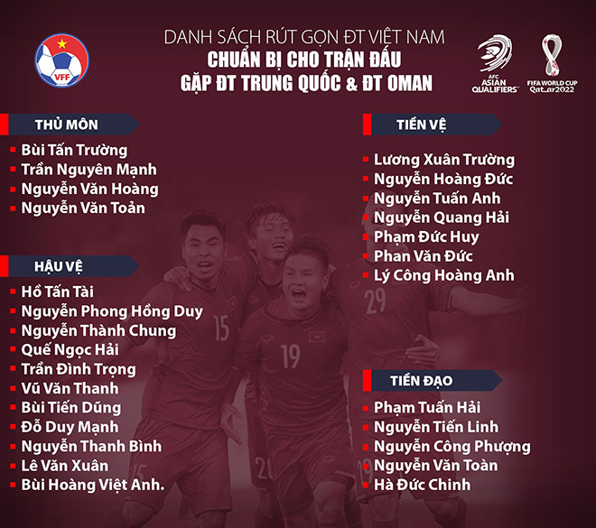

-
HLV Park Hang Seo vừa chính thức công bố danh sách 27 tuyển thủ Việt Nam chuẩn bị cho 2 trận đấu trước Trung Quốc và Oman ở vòng loại cuối cùng World Cup 2022 khu vực châu Á.
Theo kế hoạch dự kiến, tối nay (30/9) ĐT Việt Nam sẽ di chuyển ra sân bay Nội Bài (Hà Nội) để làm thủ tục cho chuyến bay đi UAE, cất cánh lúc 1h sáng 1/10, để chuẩn bị cho 2 trận đấu thuộc bảng B vòng loại cuối cùng World Cup 2022 khu vực châu Á trước lần lượt Trung Quốc (tại UAE ngày 7/10) và Oman (tại Muscat ngày 12/10).
Đây là chuyến bay thẳng nên thầy trò HLV Park Hang Seo dự kiến sẽ chỉ mất khoảng gần 7 tiếng để có mặt tại UAE. Trưa ngày 30/9, HLV Park Hang Seo đã chính thức công bố danh sách 27 tuyển thủ Việt Nam sẵn sàng lên đường đi UAE đấu Trung Quốc và Oman.
Theo đó, các cầu thủ sẽ không đồng hành cùng ĐT Việt Nam trong 2 trận đấu sân khách sắp tới gồm hậu vệ Trần Văn Kiên, Trương Văn Thiết, tiền vệ Trần Minh Vương, Nguyễn Trọng Hoàng, Nguyễn Trọng Đại và tiền đạo Nguyễn Xuân Nam.
Trong số các cầu thủ nói trên thì sự vắng mặt của Minh Vương và Trọng Hoàng là điều đáng tiếc đối với ĐT Việt Nam. Minh Vương chưa kịp hồi phục chấn thương dây chằng trong khi Trọng Hoàng đang điều trị thoát vị đĩa đệm.
Tiền đạo Nguyễn Công Phượng đã chính thức góp mặt trong danh sách ĐT Việt Nam chuẩn bị cho cuộc thư hùng với ĐT Trung Quốc. Trước đó, Công Phượng vắng mặt trong 2 trận thua của ĐT Việt Nam trước Saudi Arabia và Australia vì lý do cá nhân.
-

Công Phượng mới được triệu tập bổ sung lên ĐT Việt Nam từ ngày 9/9 và trải qua hơn 1 tuần thử thách rèn thể lực cùng ĐT U22 Việt Nam, sau đó mới có thể trở lại tập luyện và trải qua các bài kiểm tra quan trọng cùng “những chiến binh sao vàng”.
Ngoài sự góp mặt của Công Phượng, HLV Park Hang Seo còn trao cơ hội cho 5 cầu thủ thuộc lứa U22 là thủ thành Nguyễn Văn Toản, tiền vệ Lý Công Hoàng Anh và bộ ba hậu vệ gồm Nguyễn Thanh Bình, Lê Văn Xuân và Bùi Hoàng Việt Anh.
Trận đấu giữa ĐT Việt Nam và ĐT Trung Quốc sẽ diễn ra lúc 22h00 ngày 7/10 tại sân vận động Sharjah (UAE). Sau trận đấu này, toàn đội sẽ di chuyển sang Oman để thi đấu trận kế tiếp với đội tuyển của nước chủ nhà vào ngày 12/10.
Trước mỗi trận đấu, HLV Park Hang Seo sẽ chọn ra 23 cầu thủ trong số 27 cầu thủ để điền tên vào danh sách thi đấu chính thức.